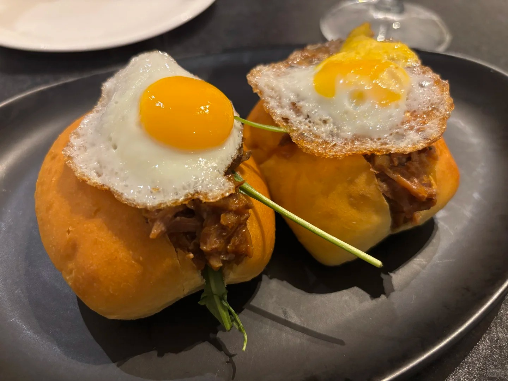
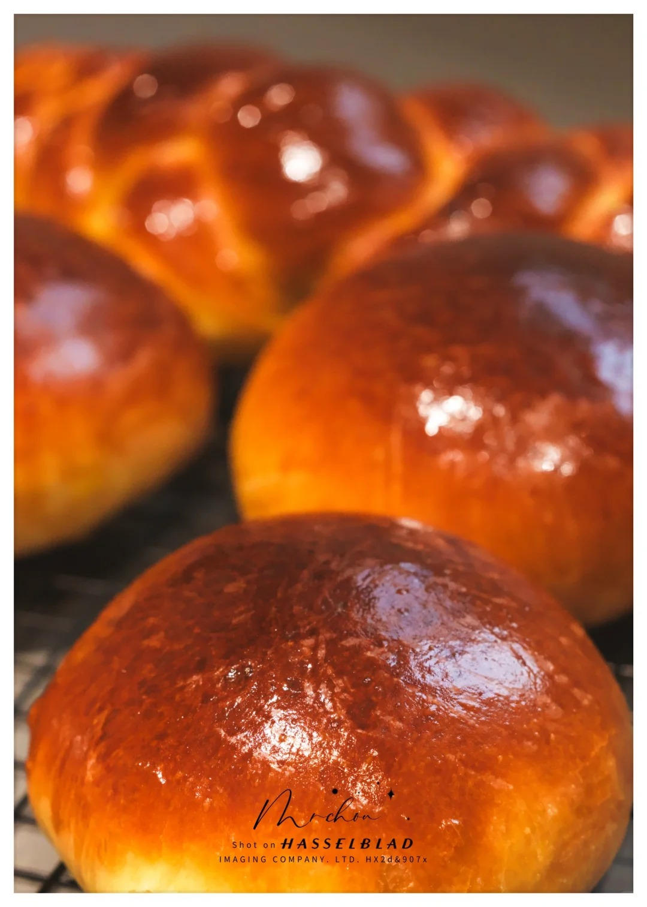

布里欧修


布里欧修（Brioche）是一种著名的法国面包。面包外皮金黄酥脆，内部柔软且富有弹性，由于使用了大量的鸡蛋和黄油，口感细腻，入口即化，具有浓郁的奶香味和蛋香味。常见的布里欧修有不同的造型，如尖型（Brioche à tête），顶部有一个尖头，整体形状类似蘑菇；还有面包型（Pain Brioche），外型为吐司状。 其起源说法不一，有观点认为它可能起源于古罗马帝国，也有说法称其最早于 16 世纪在法国诺曼底地区制作。当时，诺曼底盛产牛奶，人们利用制作奶油的副产品乳清加入面包中，从而诞生了布里欧修。 法国大革命前夕，社会矛盾激化，有传闻说法王路易十六的王后玛丽・安托瓦内特曾说过 “吃不起面包，就吃蛋糕呗”，这里的 “蛋糕” 指的就是布里欧修。不过，后来有考证指出这句话可能并非玛丽王后所说，而是被革命党人诬陷。
制作方法：